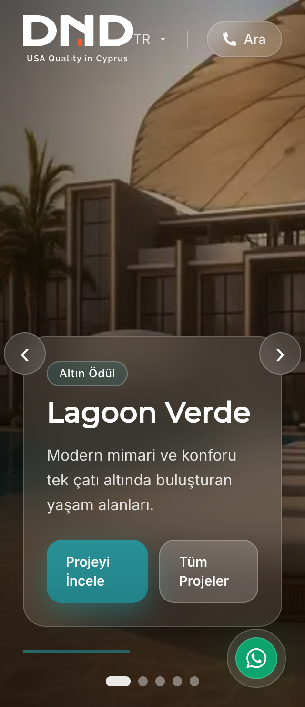
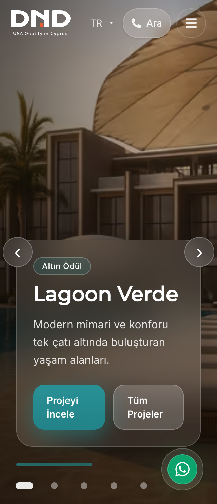

15 Ekim 2026 · Yerel production · 1xDBqubpGQmxPvGS66w5v
Mobil responsive ve performans sonuçları
Mobil menü erişimi, kısa yatay ekran yerleşimi ve kayan WhatsApp düğmesiyle çakışan slayt kontrolleri düzeltildi. Görsel, font ve CSS yükleme davranışları iyileştirildi. 36 sayfanın yazıları, başlıkları ve açıklamaları korundu. Değişiklikler henüz push edilmedi veya yayınlanmadı.
Ana sayfalar · mobil önce / sonra
| Sayfa | Performans / 100 | İlk içerik çizimi (FCP) | LCP | İlk yükleme verisi |
|---|---|---|---|---|
| /tr | 90 → 92 | 1,21 sn → 0,90 sn | 3,61 sn → 3,38 sn | 487,3 KB → 451,1 KB |
| /en | 90 → 91 | 1,20 sn → 0,90 sn | 3,61 sn → 3,53 sn | 490,0 KB → 453,8 KB |
Üçer ölçümün metrik medyanları. Lighthouse 13.5 mobil simülasyon, boş önbellek, aynı ağ profili. Analiz/reklam servisleri ölçümlerde engellendi ve ağ kayıtlarıyla doğrulandı. Bu değerler uygulama performansını gösterir; canlı ziyaretçi verisi değildir.
Giderilen mobil sorunlar
- Menü, sayfa açılır açılmaz erişilebilir. 1024px altındaki tablet/telefon ekranları menü çekmecesini kullanıyor.
- Dar ekranda logo, dil, arama ve menü kontrolleri sığıyor. Çekmece okunaklı arka plan, güvenli ekran boşlukları, odak yönetimi ve kaydırma kilidiyle çalışıyor.
- Yatay telefonda ana görsel başlıklarının üst menüyle çakışması giderildi.
- Slayt noktaları 44px dokunma alanına sahip. En dar telefonlarda WhatsApp için boşluk ayrıldı; video slayt okları da bu düğmeden uzaklaştırıldı.
- Parmakla yatay slayt geçişi ve dikey sayfa kaydırması doğrulandı. Hero alanında pinch-zoom açık. Çerez düğmeleri büyütüldü; mobil/tablet form yazıları 16px tutuldu.
Yükleme iyileştirmeleri
- Ana fotoğraf için 480–1536px aralığında yedi AVIF sürümü üretildi; tarayıcı uygun boyutu seçiyor. WebP yedeği çalışıyor; AVIF destekleyen tarayıcıda iki görsel birden indirilmiyor.
- Ödül görselleri görünür olmadan indirilmiyor. Swiper stilleri ihtiyaç duyan bileşenlere taşındı; kullanılmayan coverflow stilleri kaldırıldı.
- TR / EN font tanımı ortaklaştırıldı. Font sürümleri ve karakter desteği korundu. Yavaş ilk ziyaretlerde metnin geç font değişimiyle yeniden çizilmesi önleniyor.
Yavaş bağlantıda, optional font davranışı o sayfa görüntülemesinde sistem yedeğini koruyabilir. Orijinal görseller ve font dosyalarının karakter kapsamı değiştirilmedi.
320px ekran · önce / sonra
Önce


Sonra


Ek mobil ölçümler
| Sayfa | Performans / 100 | LCP | Veri |
|---|---|---|---|
| /tr/contact | 92 | 3,31 sn | 487,1 KB |
| /tr/perla-ii | 90 | 3,68 sn | 707,3 KB |
| /tr/dndcyprus | 88 | 3,94 sn | 559,5 KB |
| /en/dndcyprus | 86 | 4,16 sn | 663,6 KB |
Masaüstü ana sayfalar: /tr: 100/100, LCP 0,79 sn · /en: 100/100, LCP 0,80 sn
Doğrulama kapsamı
- 36 sayfa × 320 / 390 / 768px: 108 ekran kontrolü. Ek yatay ekran: 8 kontrol.
- Son build: 18 dokunma/menü/çerez senaryosu, 6 görsel ve slayt senaryosu, 2 font testi ve 6 ana sayfa yerleşim kontrolü geçti.
- Önceki optimizasyon build’lerinde 14 galeri/kat planı/menü regresyonu ve 4 tablet/yatay medya kontrolü de geçti.
- Production build ve TypeScript başarılı; 47 route üretildi. 78 test geçti. Lint: 0 hata, 221 mevcut uyarı.
- 36 sayfanın metin ve metadata karşılaştırmasında değişen alan: 0.
Geniş ekran matrisi son font tanımı, slayt noktası boşluğu ve video oku konum değişikliklerinden önce tamamlandı. Bu değişikliklerden etkilenen ana sayfalar son build’de yeniden test edildi. Tam build kimlikleri JSON kanıtlarında bulunuyor.
Kalan sınırlar
Mobil LCP, ölçülen normal sayfalarda hâlâ 2,5 sn iyi eşiğinin üzerinde. Medya merkezindeki kapak yükü daha fazla iyileştirme alanı bırakıyor. Sonuçlar fiziksel iOS Safari/Android cihaz testi veya gerçek ziyaretçi p75 / INP ölçümü değildir.
İlk filtre denemesi dış servisleri engellemediği için o veri önce/sonra karşılaştırmasına dahil edilmedi. Buradaki başlangıç ve sonuç ölçümlerinin ağ izolasyonu doğrulandı. Mevcut lint uyarıları ve middleware bildirimi korunuyor.
Kanıtlar
Sonuç verileri · Başlangıç ölçümleri · Son mobil ölçümler · Ekran matrisi · Dokunma testleri · İçerik karşılaştırması